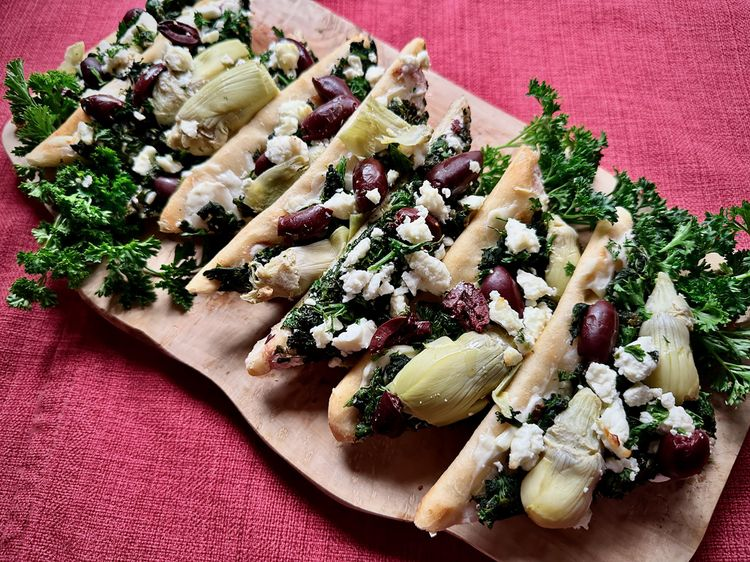

Home
Mediterranean Flatbread

🫓 Description
A quick and flavorful appetizer made using store-bought flatbread layered with creamy cheese, garlicky spinach, artichoke hearts, Kalamata olives, and feta. Baked for just minutes, it's an easy crowd-pleasing Mediterranean bite.
Ingredients
- 1 piece flatbread (about 6 x 12 inches), thawed
- 1 (3 oz) package cream cheese, softened
- ½ lb frozen spinach, thawed & squeezed dry
- 1 clove garlic, minced
- ¼ tsp ground nutmeg
- ½ tsp dried dill
- Pinch of salt (or to taste)
- ½ cup chopped fresh parsley
- 5 marinated artichoke hearts, halved (or more to taste)
- 10 Kalamata olives, pitted & halved (or more to taste)
- ½ cup crumbled feta cheese
- 2 Tbsp olive oil (or to taste)
Steps
- Preheat oven to 425°F (220°C). Line a baking sheet with parchment paper.
- Place the flatbread on the sheet and spread it evenly with softened cream cheese.
- In a bowl, mix the thawed spinach, garlic, nutmeg, dill, and salt.
- Spread the spinach mixture over the cream cheese and gently press it down; sprinkle parsley on top.
- Arrange artichoke halves and halved olives evenly over the spinach layer; top with crumbled feta.
- Bake for about 8-10 minutes, until heated through.
- Remove from oven, drizzle with olive oil, and cut into 8 triangles. Serve warm